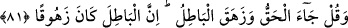
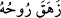
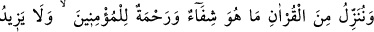
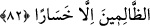

Allah’ın ehline sert mizaçlı bir bedevîyi vâli tâyin ettin” diyerek şikâyette bulundular.
Bunun üzerine Hz. Peygamber (s.a.): “Rüyamda Attâb b. Esîd’in cennet kapısına
geldiğini gördüm. Attâb kapının halkasını şiddetli bir şekilde çaldı. Nihâyet ona kapı
açıldı ve içeriye girdi”[132] buyurdu. Allah, müslümanlara zulmetmek isteyenlere karşı
onun yardım etmesinden dolayı İslâm’ı aziz kıldı. İşte ‘hakkıyla yardım edici kuvvet’
budur.
81. Yine de ki: “Hak geldi; bâtıl yıkılıp gitti. Zâten bâtıl yıkılmaya mahkumdur.”
“Yine de ki: “Hak” İslam ve Kur’an “geldi; bâtıl yıkılıp gitti.” ‘
rûhu çıktı
anlamındadır. Yâni bâtıl gitti, şirk ve şeytan helâk oldu.
Şeytan kaçar o topluluktan ki Kur’an okurlar
İmam Kuşeyrî (k.s.) şöyle demiştir: “Hak, Allah için olan şeydir. Bâtıl ise O’ndan
başkası için olan şeydir.” Te’vîlât sâhibi şu görüştedir: “Hak, sâbit ve vâcib olan
varlıktır. O’nun şânı yücedir ki ezelî ve ebedîdir. Bâtıl ise beşerî ve mümkün olan
varlıktır ki zevâl ve fenâ kabul eder. Hakkânî varlığın parıltılarının ışıkları zâhir olunca
onun yanında mevhum mümkin varlık kaybolur ve yok olur.”
Her ne varsa O’na nisbetle yoktur
Adı ‘varlık’ olan ne kadar var varsa O’nunla kâimdir
Çünki sultân-ı izzet sancağı yukarı kaldırdı
Cihan başını yokluk yakasına çekti, yok oldu
“Zâten bâtıl” ne olursa olsun “yıkılmaya mahkûmdur.” Yâni o yokluğa mahkûm ve
yerinde kalıcı değildir. İbn Mes‘ûd (r.a.)’dan şöyle rivâyet olunmuştur: “Hz.
Peygamber (a.s.) Mekke’ye girdiğinde Kâbe’nin etrafında üç yüz altmış put vardı. Hz.
Peygamber “Hak geldi, bâtıl yıkılıp gitti” diyerek elindeki sopayla onların tek tek
gözlerine dürterek hepsini yüzüstü devirdi. Nihâyet Kâbe’nin üzerinde bulunan
Huzâalılar’a kurşundan yapılmış bir put kaldı. Hz. Peygamber (s.a.) “Ey Ali onu
aşağıya at” buyurdu. Hz. Ali yukarıya tırmanarak onu aşağıya attı ve kırdı.”[133]
82. Biz, Kur’an’dan öyle bir şey indiriyoruz ki o, müminler için şifâ ve rahmettir;